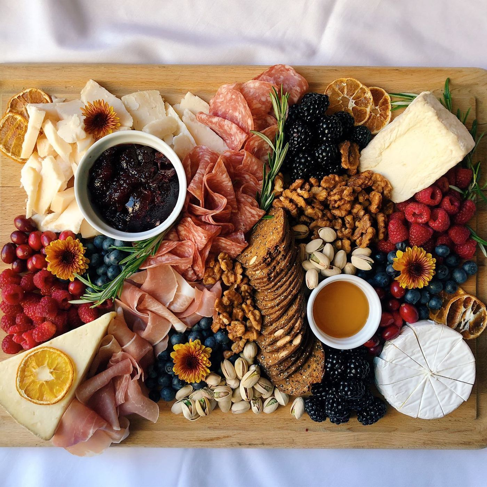

Charcuterie Board Recipe

Description
Charcuterie which translates to "pork-butcher shop" from French,is known for it's assemblance of crackers, cheeses, fruits, meats, nuts, spreads,
and anything else you want to add! Pairs well with wine ; )
Recipe
Tools
- Serving Board
- Cheese Knives
- Small Dishes: for spreads, jams, olives, pickles, etc.
Ingredients
Meats
- Peppered Salami
- Deli Hams
- Proscuitto
Cheeses
- Boursin Dairy-Free Garlic-Herb Cheese
- Softened Brie
- Camembert
Fruits and Nuts
- Grapes
- Raisins
- Strawberries
- Cherries
- Pistachios
- Almonds
- Peanuts
Crackers and Bread
Instructions
- Create A Theme:
- What flavors do you want to focus on?
- How are you going to serve it?
- Are you making this board for a specific holiday or occasion?
- Check Your Pantry and Fridge: You probably have some ingredients already!
- Arrange Ingredients: You can use different colors and textures to complement each other.
- Balance Out Your Board: If you have a lot of cheeses and meats, add some fresh fruit or berries to lighten up the board.
- Enjoy!